Spell Lab
Светлая сказочная лаборатория
Колбы, пробирки, разноцветные трубы и звёздные платформы исходной карты сохранены. Металлическая отделка заменена камнем и тёплыми акцентами; добавлены дневное небо, 36 деревьев из общего пака, 10 башен и 12 арок.
Открыть итоговый Blender-проект · Проверка сохранности · Проверка сборки и веса
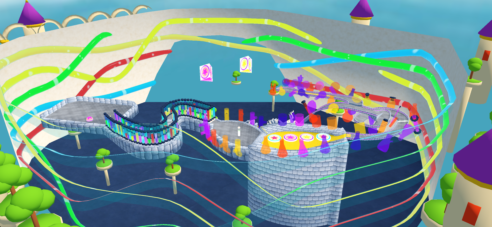
Референс и границы соответствия
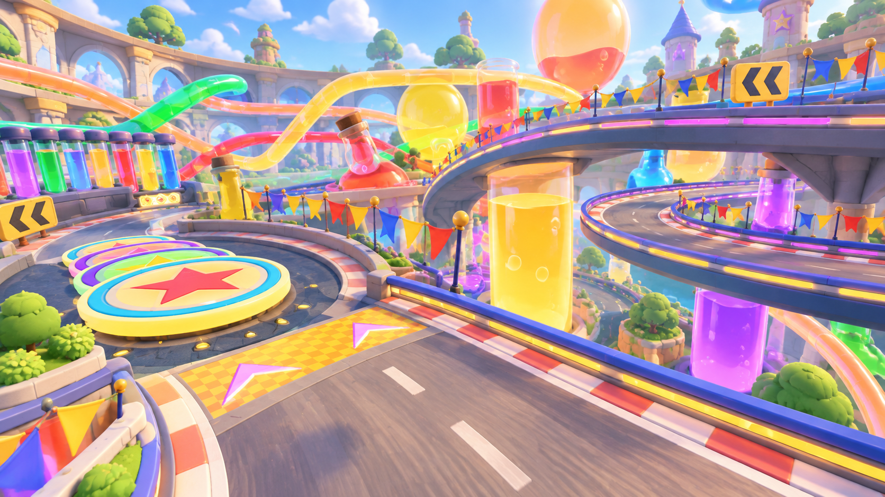
Карточка Spell Lab в Figma · Зафиксированный снимок карточки

| Элемент референса | Реализация |
|---|---|
| Цветные колбы, пробирки и трубы | Уже присутствовали в исходнике. Сохранены геометрия, прозрачность и анимация жидкости. |
| Звёздные площадки | Сохранены исходные модели и подходящие текстуры; изменено окружающее оформление. |
| Каменная архитектура, башенки и зелень | Каменные материалы общего пака, новые арки и башни; повторно использована геометрия листвы и стволов. |
| Светлое дневное окружение | Общее дневное небо, тёплый свет, мягкий голубой туман. |
| Сложная дорожная композиция иллюстрации | Не копировалась: сохранены исходная гравитационная спираль, трасса, стены, телепорты и режим поиска яиц. |
Это адаптация стилистики вокруг исходного маршрута, а не точная реконструкция иллюстрации. Гирлянды вдоль всей трассы не добавлены. Стекло, тени и освещение в текущем fixed-pipeline рендере симулятора проще референса.
До и после

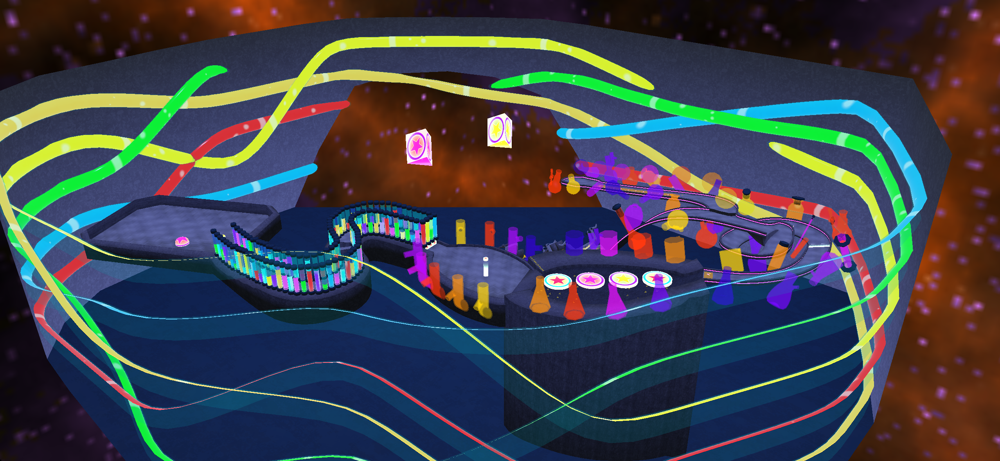

Скриншоты из собранного приложения
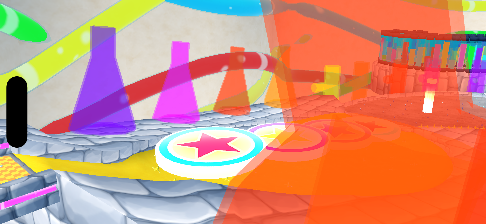
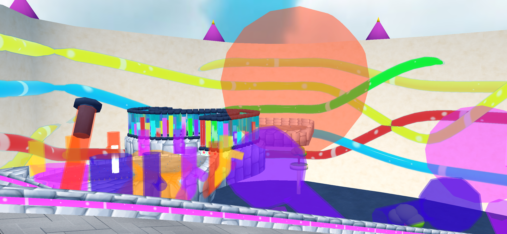
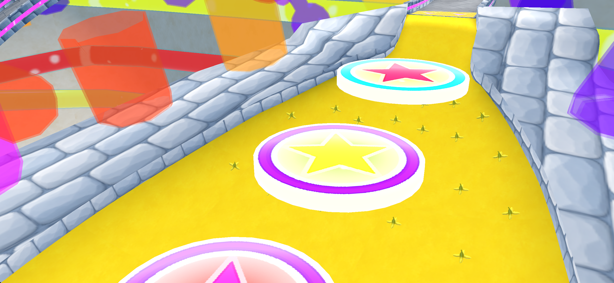
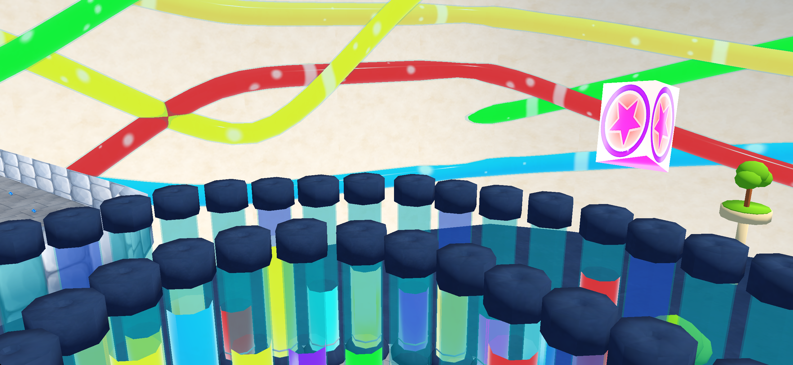
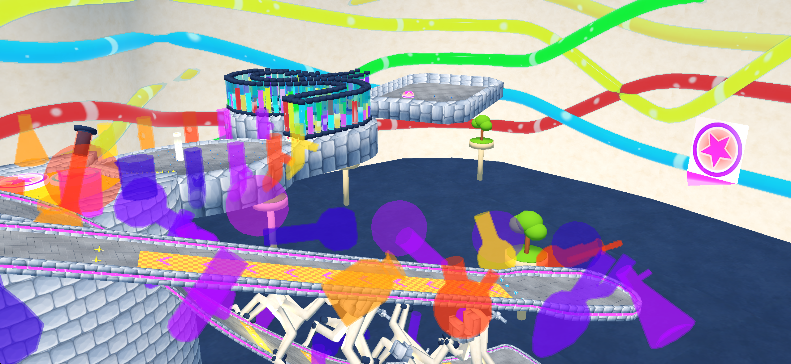
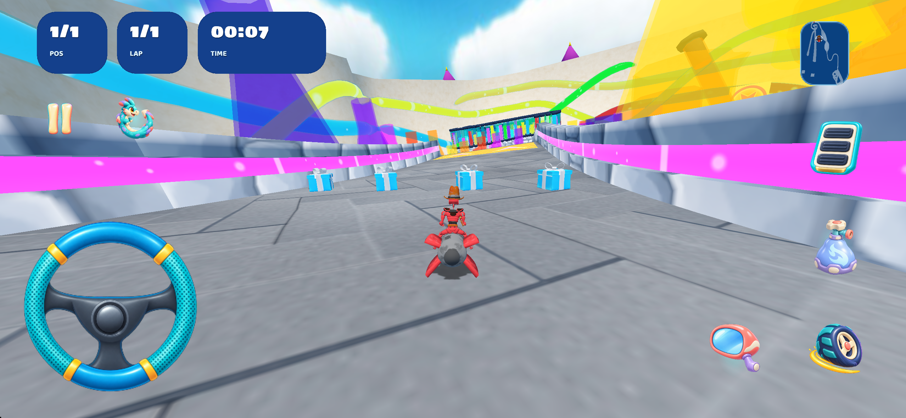
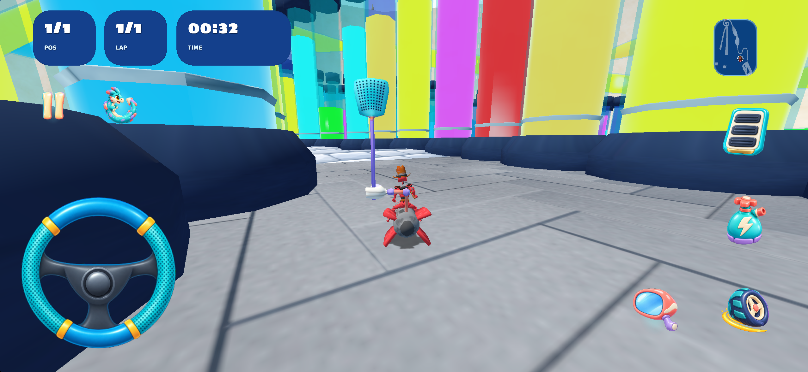
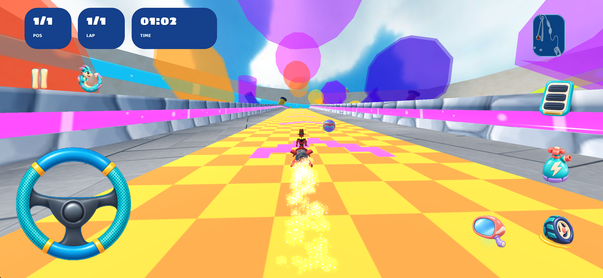

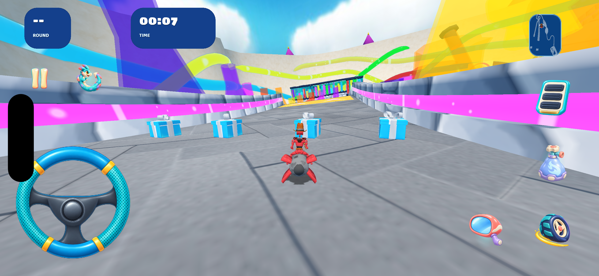
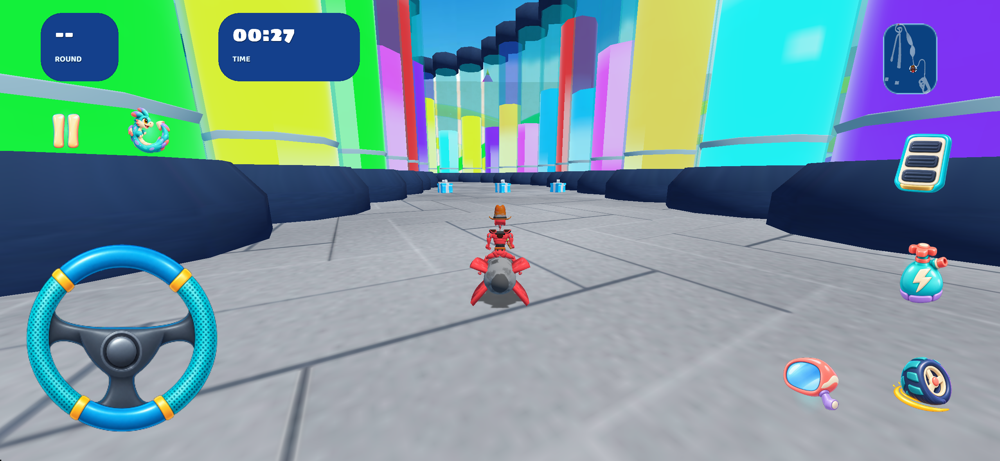
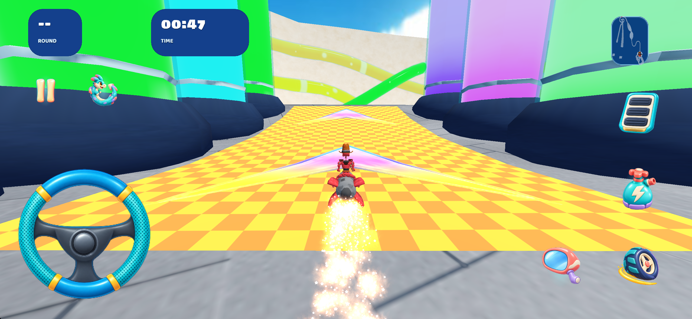
Видео проверки
Сохранность и вес
| Проверка | Результат |
|---|---|
| 13 исходных моделей | Все байты геометрии, индексы, UV, нормали и границы сохранены. Менялись только имена материалов в таблице SPM. |
| Лимит для каждой исходной модели с её текстурами | Все 13 моделей укладываются в ±20%; наибольшее изменение +6,87%. Расчёт по моделям. |
| Маршрут и логика | quads.xml, graph.xml, scripting.as, easter_eggs.xml, track.xml и materials.xml совпадают побайтно. Все исходные объекты scene.xml, их трансформации, callbacks и анимации сохранены. |
| Новый декор | Отдельный ghost-меш без коллизии. Внешние объекты находятся за пределами исходной трассы; 8 внутренних садов проверены по AABB треугольников. |
| Треугольники | 111,602 → 131,942; +18.23%. |
| Модели + непосредственно используемые текстуры | 6,57 → 7,25 МБ; +10.35%. Уникальные текстуры считаются по SHA-256, включая нормали и gloss-map; небо отдельно. |
| Папка ресурсов карты | 34,14 → 34,94 МБ; +2.36%. |
| Сохранённое исходное небо | 24,08 МБ входят в папку карты, но не используются текущей сценой. Исходные файлы не удалялись. |
| Активные уникальные текстуры, включая новое небо | 3,95 МБ. |
| Полное приложение | 338,40 МБ, из них data — 299,02 МБ. Распакованная Debug-сборка iphonesimulator, не IPA и не размер скачивания из App Store. |
| Blender | Один итоговый файл; повторно открыт, отсутствующих изображений — 0. Пак содержит 124 использованных записей и 2069 уникальных ID всего. |
| Сборка и установка | xcodebuild завершён успешно. Файлы результата, ресурсов проекта, собранного и установленного приложения сверены по SHA-256. |
Повторное использование
Камень, слоновая кость, золото, тёмно-синяя отделка, цветовой атлас, небо и геометрия деревьев взяты из физического общего пака. Новые варианты архитектуры зарегистрированы вместе с материалами и зависимостями. Исходные колбы и игровые объекты повторно не перестраивались.
Аудит общего пака · Объекты, материалы и размещения · Ограничения проверки
Проверка повторения текстур


Проверка выполнена только в iOS Simulator. Производительность на устройстве и все уровни сложности не проверены. В логах остались прежние предупреждения локализации, benchmark replay и классов двух картов; новых ошибок отсутствующих текстур Spell Lab не обнаружено. Ошибка ранней временной обзорной сцены была вызвана race-checks без DriveGraph; исправлен только инструмент съёмки, игровая логика не менялась.